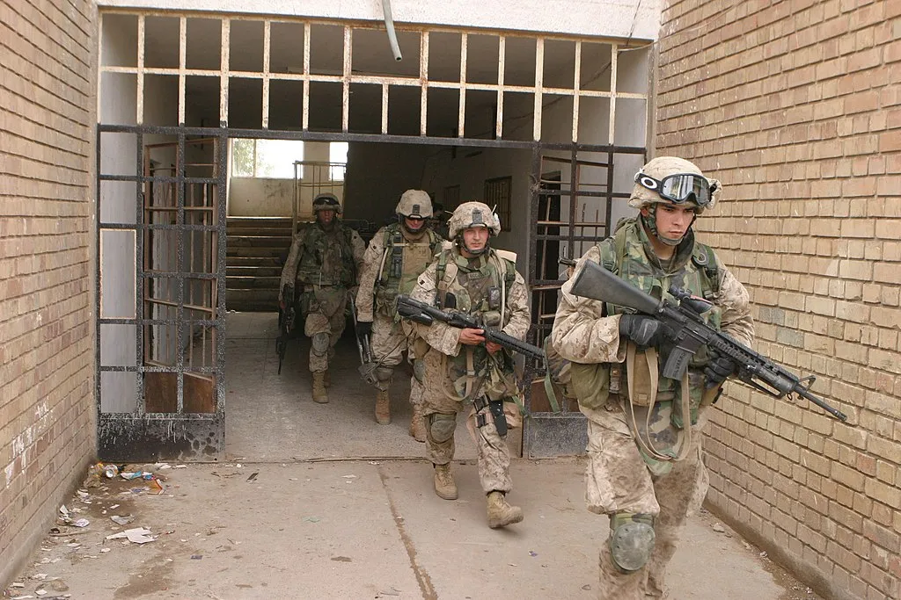
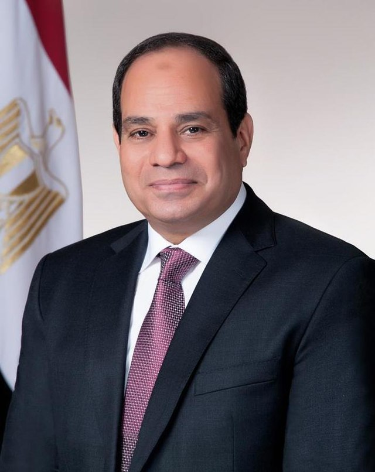

hello twin

i am athan murphy and i have a passion for the US armed forces, including military history aswell as politics. ive played games such as squad, arma, six days in fallujah, ready or not, garry's mod, suzerain, team fortress 2, phasmophobia, and sons of the forest, alongside many other games. while i have no job yet, i plan on getting one once i get my driver's license and get a car, as a car promotes independence for me and the ability to go places on my own without the assistance of my parents or other family members.
abdel fattah el sisi

el Fattah Saeed Hussein Khalil el-Sisi (born November 19 , 1954 ) is an Egyptian politician and military officer who has been the sixth and current President of the Arab Republic of Egypt since June 3, 2014, and the Supreme Commander of the Egyptian Armed Forces . He rose through the military ranks until he was appointed Director of Military Intelligence and Reconnaissance in 2010, then he was chosen as Minister of Defense, succeeding Field Marshal Mohamed Hussein Tantawi on August 12, 2012. He was elected in 2014 for a term of 4 years after his success in the presidential elections . This was after he overthrew President Mohamed Morsi on July 3, 2013 (the first elected civilian president after the January 25 Revolution ) a year after he took power following demonstrations demanding his departure. He announced accompanying measures known as the Roadmap. Supporters of President Mohamed Morsi at the time opposed it and considered it - along with a part of the international and Arab community - a military coup. While demonstrators and opponents of President Mohamed Morsi at the time supported it and considered it a revolution and support for popular demands.
abdel fattah el sisi
el Fattah Saeed Hussein Khalil el-Sisi (born November 19 , 1954 ) is an Egyptian politician and military officer who has been the sixth and current President of the Arab Republic of Egypt since June 3, 2014, and the Supreme Commander of the Egyptian Armed Forces . He rose through the military ranks until he was appointed Director of Military Intelligence and Reconnaissance in 2010, then he was chosen as Minister of Defense, succeeding Field Marshal Mohamed Hussein Tantawi on August 12, 2012. He was elected in 2014 for a term of 4 years after his success in the presidential elections . This was after he overthrew President Mohamed Morsi on July 3, 2013 (the first elected civilian president after the January 25 Revolution ) a year after he took power following demonstrations demanding his departure. He announced accompanying measures known as the Roadmap. Supporters of President Mohamed Morsi at the time opposed it and considered it - along with a part of the international and Arab community - a military coup. While demonstrators and opponents of President Mohamed Morsi at the time supported it and considered it a revolution and support for popular demands.